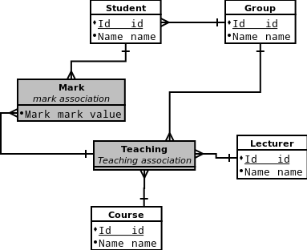
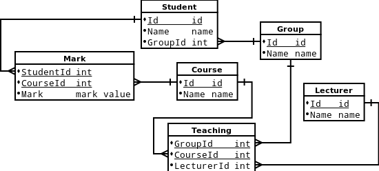

Made by George Agapov, group M3437
Student_Id, Student_Name, Group_Id, Group_Name, Course_Id, Course_Name, Lecturer_Id, Lecturer_Name, Mark
For purpose of demonstrating (difference between 3-NF and BCNF) let's omit Group_id, Group_Name and start with initial relation:
Student_Id, Course_Id, Student_Name, Course_Name, Lecturer_Id, Lecturer_Name, Mark
Student_Id, Course_Id, Student_Name, Course_Name, Lecturer_Id, Lecturer_Name, Mark
X->Y: X is a super key(Student_Id, Course_Id), (Group_Id, Course_Id) - multi-valued facts, but only two
So, 4-NF is same as BCNF
5-NF is same as BCNF


CREATE TABLE Student (
Id SERIAL NOT NULL PRIMARY KEY,
Name VARCHAR (50) NOT NULL,
GroupId INT NOT NULL
);
CREATE TABLE Lecturer (
Id SERIAL NOT NULL PRIMARY KEY,
Name VARCHAR (50) NOT NULL
);
CREATE TABLE StudentGroup (
Id SERIAL NOT NULL PRIMARY KEY,
Name VARCHAR (50) NOT NULL UNIQUE
);
CREATE TABLE Course (
Id SERIAL NOT NULL PRIMARY KEY,
Name VARCHAR (50) NOT NULL
);
CREATE TABLE Teaching (
GroupId INT NOT NULL,
CourseId INT NOT NULL,
LecturerId INT NOT NULL,
PRIMARY KEY (GroupId, CourseId)
);
CREATE TABLE Mark (
StudentId INT NOT NULL,
CourseId INT NOT NULL,
Mark DECIMAL (4, 2) NOT NULL,
PRIMARY KEY (StudentId, CourseId)
);
ALTER TABLE Student ADD CONSTRAINT FK_Student_GroupId FOREIGN KEY (GroupId) REFERENCES StudentGroup (Id);
ALTER TABLE Teaching ADD CONSTRAINT FK_Teaching_LecturerId FOREIGN KEY (LecturerId) REFERENCES Lecturer (Id);
ALTER TABLE Teaching ADD CONSTRAINT FK_Teaching_GroupId FOREIGN KEY (GroupId) REFERENCES StudentGroup (Id);
ALTER TABLE Teaching ADD CONSTRAINT FK_Teaching_CourseId FOREIGN KEY (CourseId) REFERENCES Course (Id);
ALTER TABLE Mark ADD CONSTRAINT FK_Mark_CourseId FOREIGN KEY (CourseId) REFERENCES Course (Id);
ALTER TABLE Mark ADD CONSTRAINT FK_Mark_StudentId FOREIGN KEY (StudentId) REFERENCES Student (Id);
ALTER TABLE Mark ADD CONSTRAINT CH_Mark_Mark CHECK (Mark >= 0 AND Mark <= 100);
echo "DROP DATABASE hw4; CREATE DATABASE hw4" | psql; psql -d hw4 < schema.sql
INSERT INTO StudentGroup (Id, Name) VALUES (1, 'M3437'), (2, 'M3338');
INSERT INTO Student (Id, Name, GroupId)
VALUES (1, 'George Agapov', 1), (2, 'George Konoplich', 1),
(3, 'Mikhail Ivanov', 2), (4, 'Alina Ruslanova', 2);
INSERT INTO Lecturer (Id, Name) VALUES (1, 'George Korneev'), (2, 'Andrew Stankevich'), (3, 'Ivan Sorokin');
INSERT INTO Course (Id, Name) VALUES (1, 'Java: basic'), (2, 'Java: advanced'),
(3, 'Translation methods'), (4, 'C++'), (5, 'Discrete math: semester 3');
INSERT INTO Teaching (GroupId, CourseId, LecturerId) VALUES (2, 1, 1), (1, 4, 3);
INSERT INTO Mark (StudentId, CourseId, Mark) VALUES (1, 4, 90), (2, 4, 70), (3, 1, 85), (4, 1, 67);